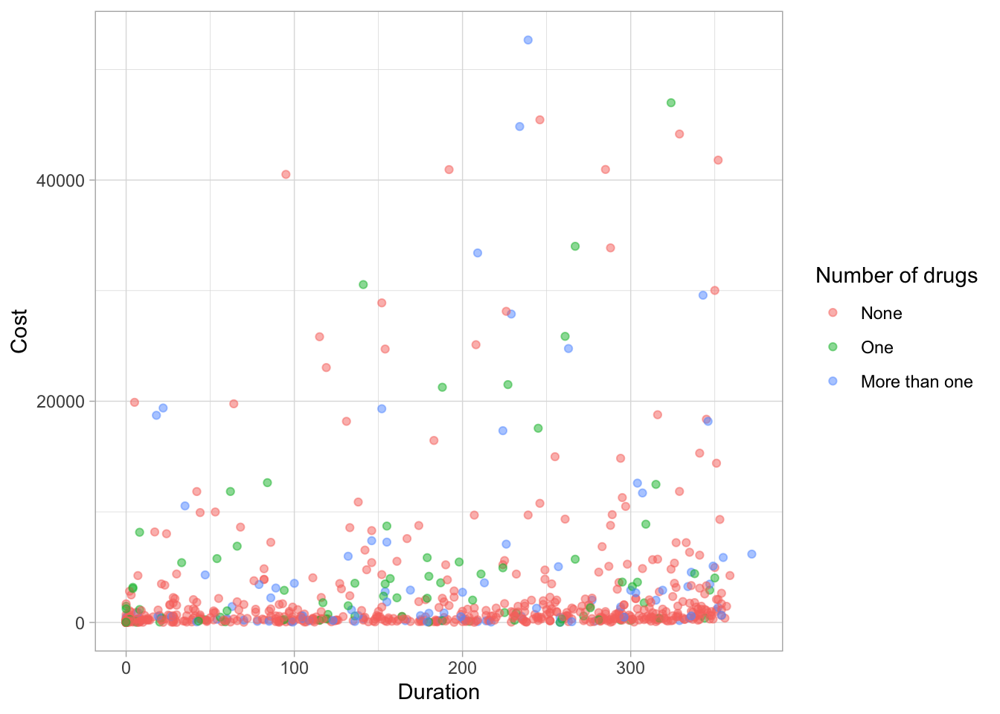
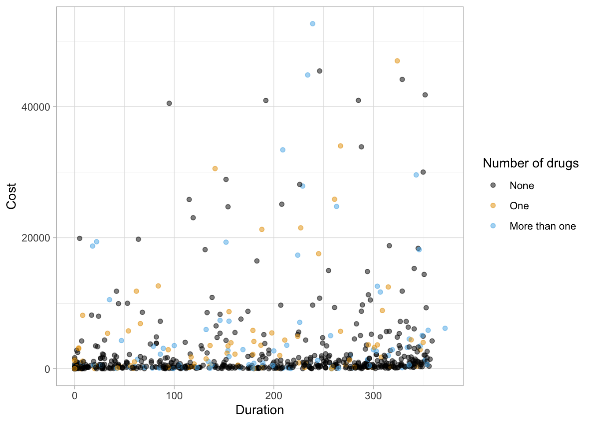
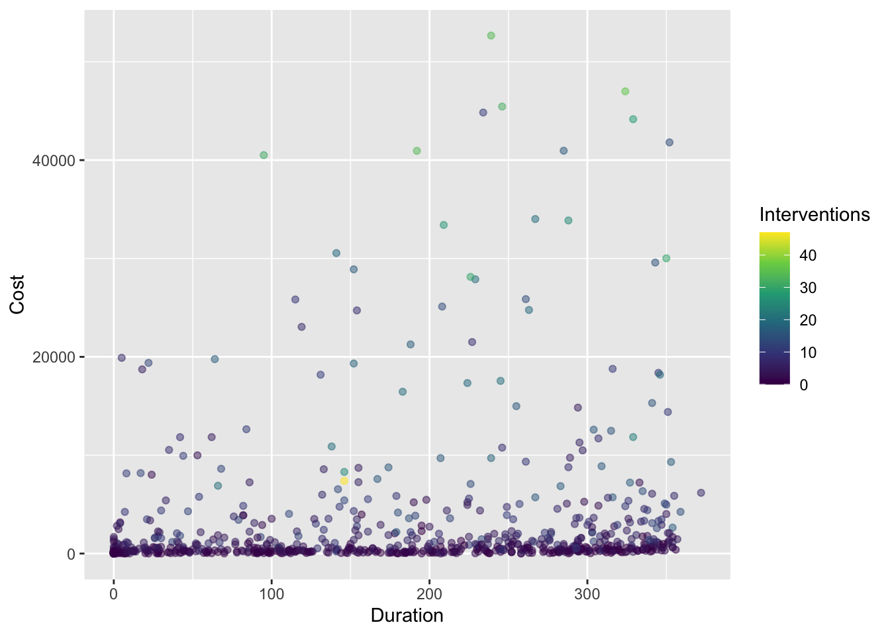
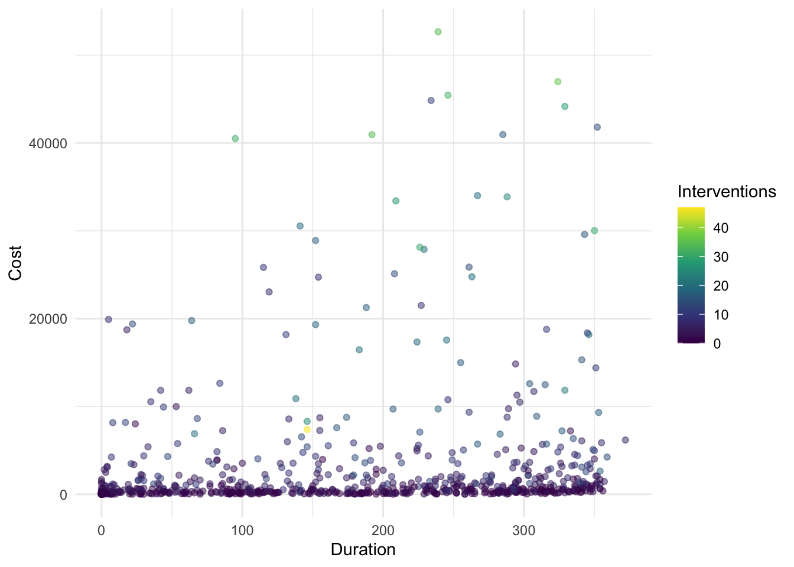
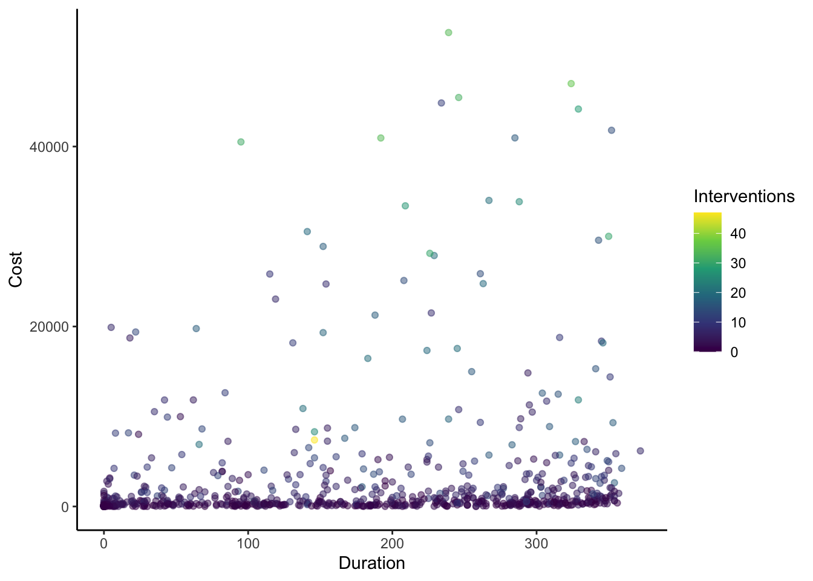
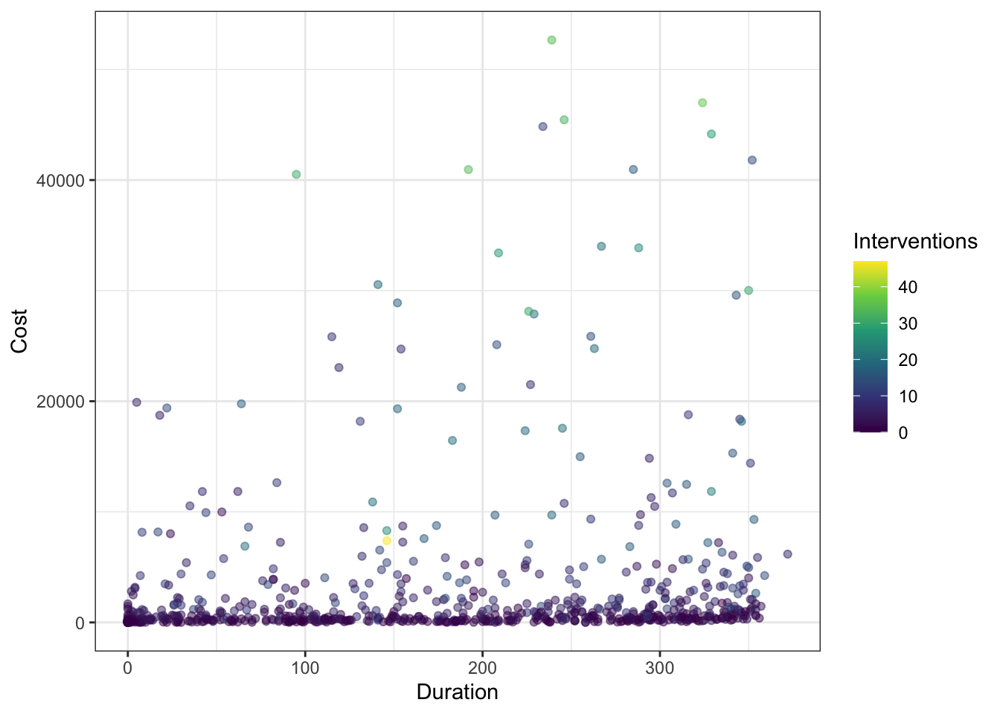
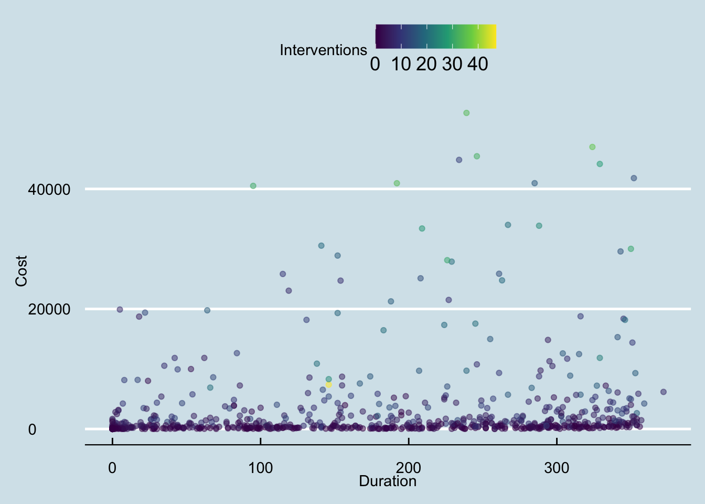
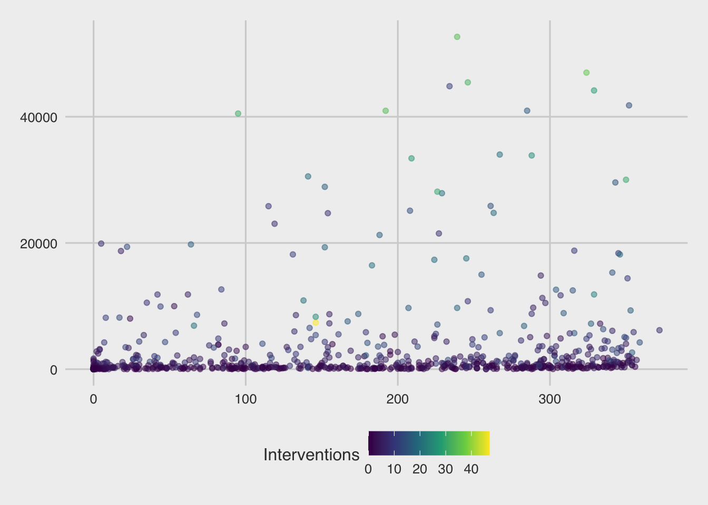
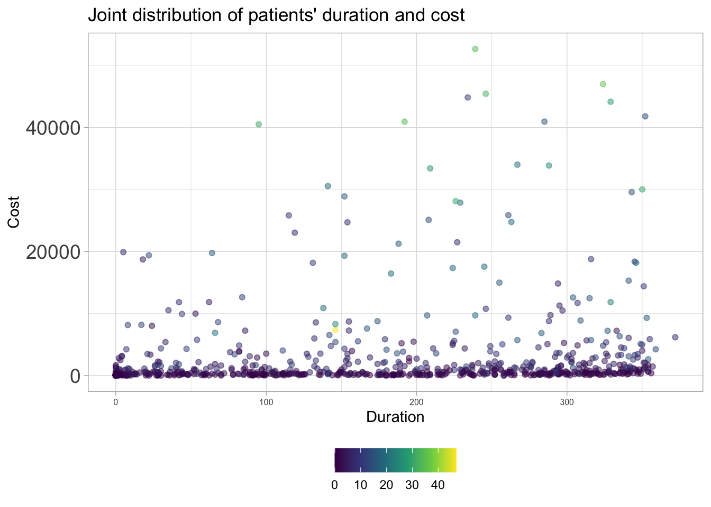

Rows: 788 Columns: 10
── Column specification ────────────────────────────────────────────────────────
Delimiter: ","
chr (1): Gender
dbl (9): Cost, Age, Interventions, Drugs, ERVisit, Complications, Comorbidit...
ℹ Use `spec()` to retrieve the full column specification for this data.
ℹ Specify the column types or set `show_col_types = FALSE` to quiet this message.
Previewing the data
Write code that displays the column names of heart_disease. Also, look at the first six rows of your dataset to get an idea of what these variables look like. Which variables are quantitative, and which are categorical?
# INSERT CODE HERE
As it turns out, even though Drugs and Complications appear to be quantitative - they are actually categorical variables. Specifically, Drugs represents the categorized number of drugs prescribed: 0 if none, 1 if one, 2 if more than one; Complications indicates whether or not the subscriber had complications: 1 if yes, 0 if no. To address this issue for our plots, we can manually recode the variables as factors. For instance, we can modify the Complications variable using a simple if-else statement:
This is a quick fix to the binary indicator variable since, by default, R orders factor variables in alphabetical order. In this case, “No” is before “Yes” because “N” is before “Y”. We may not want variables in alphabetical order however - we will see how to change this in lecture.
Next, to update the Drugs variable we will use the fct_recode() function which allows us to manually change the labels of a factor variable:
heart_disease <- heart_disease |>mutate(Drugs =fct_recode(as.factor(Drugs), "None"="0", "One"="1", "More than one"="2"))
Why did we have to specify as.factor(Drugs) first then place the numbers in quotation marks?
Always make a bar chart…
Now we’ll use the ggplot() function to create a bar chart of the Drugs variable. To make things easier, we provide the code for you to do this below; just uncomment the code and run it to create the bar chart. In what follows, you must answer some questions about the code and plot.
# Create the bar chart of Drugs:# heart_disease |># ggplot(aes(x = Drugs)) +# geom_bar(fill = "darkblue") +# labs(title = "Number of patients by number of drugs",# x = "Number of drugs",# y = "Number of patients")
Answer the following questions about the code and plot:
In general, ggplot() code takes the following format: ggplot(blank1, aes(x = blank2)). Looking at the above code, what kind of R object should blank1 be, and what should blank2 be?
What do you think the line geom_bar(fill = "darkblue") does?
What do you think the remaining lines of code do (contained in labs())?
More area plots (but bar charts are better!)
Now we’ll make a few other area plots:
spine chart
pie chart
rose diagram
Your goal for this part is to create each of these plots. These plots can be created by copy-and-pasting the bar chart code from above and modifying it slightly. Follow these directions to create each of these plots:
spine chart: First, copy-and-paste the bar chart code from above. Then, delete the fill = "darkblue" within geom_bar(). Finally, within ggplot(), replace aes(x = Drugs) with aes(x = "", fill = Drugs). Also, change the labels in labs() if necessary.
# PUT YOUR SPINE CHART CODE HERE
pie chart: First, copy-and-paste the spine chart code you just made. Then, after geom_bar(), “add” coord_polar("y"). Be sure to put plus signs before and after coord_polar("y"). Also, change the labels in labs() if necessary.
# PUT YOUR PIE CHART CODE HERE
rose diagram: First, copy-and-paste your original bar chart code. Then, after geom_bar(fill = "darkblue"), “add” coord_polar() + scale_y_sqrt(). Be sure to put plus signs before and after coord_polar() + scale_y_sqrt(). Also, change the labels in labs() if necessary. After you make the rose diagram: In 1-2 sentences, what do you think scale_y_sqrt() does, and what is a benefit to including scale_y_sqrt() when making the rose diagram?
# PUT YOUR ROSE DIAGRAM CODE HERE
Notes on colors in plots
Three types of color scales to work with:
Qualitative: distinguishing discrete items that don’t have an order (nominal categorical). Colors should be distinct and equal with none standing out unless otherwise desired for emphasis.
Do NOT use a discrete scale on a continuous variable
Sequential: when data values are mapped to one shade, e.g., for an ordered categorical variable or low to high continuous variable
Do NOT use a sequential scale on an unordered variable
Divergent: think of it as two sequential scales with a natural midpoint midpoint could represent 0 (assuming +/- values) or 50% if your data spans the full scale
Do NOT use a divergent scale on data without natural midpoint
Options for ggplot2 colors
The default color scheme is pretty bad to put it bluntly, but ggplot2 has ColorBrewer built in which makes it easy to customize your color scales. For instance, we can make a scatterplot with Cost on the y-axis and Duration on the x-axis and using the geom_point() layer with each point colored by Drugs:
heart_disease |>ggplot(aes(x = Duration, y = Cost, color = Drugs)) +geom_point(alpha =0.5) +labs(x ="Duration", y ="Cost",color ="Number of drugs") +theme_light()

What does alpha change? We can change the color plot for this plot using scale_color_brewer() function:
heart_disease |>ggplot(aes(x = Duration, y = Cost, color = Drugs)) +geom_point(alpha =0.5) +scale_color_brewer(palette ="Set2") +labs(x ="Duration", y ="Cost",color ="Number of drugs") +theme_light()
Something you should keep in mind is to pick a color-blind friendly palette. One simple way to do this is by using the ggthemes package (you need to install it first before running this code!) which has color-blind friendly palettes included:
heart_disease |>ggplot(aes(x = Duration, y = Cost, color = Drugs)) +geom_point(alpha =0.5) +# call the function directly from the package using `::` instead of library(ggthemes) ggthemes::scale_color_colorblind() +labs(x ="Duration", y ="Cost",color ="Number of drugs") +theme_light()

In terms of displaying color from low to high, the viridis scales are excellent choices (and are also color-blind friendly!). For instance, we can map another quantitative variable (Interventions) to the color:
heart_disease |>ggplot(aes(x = Duration, y = Cost, color = Interventions)) +geom_point(alpha =0.5) +scale_color_viridis_c() +labs(x ="Duration", y ="Cost",color ="Interventions") +theme_light()
What does this reveal about the plot? What happens if you delete scale_color_viridis_c() + from above? Which do you prefer?
Notes on themes
You might have noticed above have various changes to the theme of plots for customization. You will constantly be changing the theme of your plots to optimize the display. Fortunately, there are a number of built-in themes you can use to start with rather than the default theme_gray():
heart_disease |>ggplot(aes(x = Duration, y = Cost, color = Interventions)) +geom_point(alpha =0.5) +scale_color_viridis_c() +labs(x ="Duration", y ="Cost",color ="Interventions") +theme_gray()

For instance, Quang’s go-to theme is theme_light()
heart_disease |>ggplot(aes(x = Duration, y = Cost, color = Interventions)) +geom_point(alpha =0.5) +scale_color_viridis_c() +labs(x ="Duration", y ="Cost",color ="Interventions") +theme_light()
There are options such as theme_minimal():
heart_disease |>ggplot(aes(x = Duration, y = Cost, color = Interventions)) +geom_point(alpha =0.5) +scale_color_viridis_c() +labs(x ="Duration", y ="Cost",color ="Interventions") +theme_minimal()

or theme_classic():
heart_disease |>ggplot(aes(x = Duration, y = Cost, color = Interventions)) +geom_point(alpha =0.5) +scale_color_viridis_c() +labs(x ="Duration", y ="Cost",color ="Interventions") +theme_classic()

or theme_bw():
heart_disease |>ggplot(aes(x = Duration, y = Cost, color = Interventions)) +geom_point(alpha =0.5) +scale_color_viridis_c() +labs(x ="Duration", y ="Cost",color ="Interventions") +theme_bw()

There are also packages with popular, such as the ggthemes package which includes, for example, theme_economist():
library(ggthemes)heart_disease |>ggplot(aes(x = Duration, y = Cost, color = Interventions)) +geom_point(alpha =0.5) +scale_color_viridis_c() +labs(x ="Duration", y ="Cost",color ="Interventions") +theme_economist()

and theme_fivethirtyeight(), to name a couple:
heart_disease |>ggplot(aes(x = Duration, y = Cost, color = Interventions)) +geom_point(alpha =0.5) +scale_color_viridis_c() +labs(x ="Duration", y ="Cost",color ="Interventions") +theme_fivethirtyeight()

With any theme you have picked, you can then modify specific components directly using the theme() layer. There are many aspects of the plot’s theme to modify, such as my decision to move the legend to the bottom of the figure, drop the legend title, and increase the font size for the y-axis:
heart_disease |>ggplot(aes(x = Duration, y = Cost, color = Interventions)) +geom_point(alpha =0.5) +scale_color_viridis_c() +labs(x ="Duration", y ="Cost",title ="Joint distribution of patients' duration and cost",color ="Interventions") +theme_light() +theme(legend.position ="bottom",legend.title =element_blank(),axis.text.y =element_text(size =14),axis.text.x =element_text(size =6))

If you’re tired of explicitly customizing every plot in the same way all the time, then you should make a custom theme. It’s quite easy to make a custom theme for ggplot2 and of course there are an incredible number of ways to customize your theme. Below, we modify theme_bw() using the %+replace% argument to a new customized theme named theme_cus() - which is stored as a function:
theme_cus <-function() {# start with the base font sizetheme_bw(base_size =10) %+replace%theme(panel.background =element_blank(),plot.background =element_rect(fill ="transparent", color =NA), legend.position ="bottom",legend.background =element_rect(fill ="transparent", color =NA),legend.key =element_rect(fill ="transparent", color =NA),axis.ticks =element_blank(),panel.grid.major =element_line(color ="grey90", linewidth =0.3), panel.grid.minor =element_blank(),plot.title =element_text(size =15, hjust =0, vjust =0.5, face ="bold", margin =margin(b =0.2, unit ="cm")),plot.subtitle =element_text(size =12, hjust =0, vjust =0.5, margin =margin(b =0.2, unit ="cm")),plot.caption =element_text(size =7, hjust =1, face ="italic", margin =margin(t =0.1, unit ="cm")),axis.text.x =element_text(size =13),axis.text.y =element_text(size =13) )}
Create the plot from before with this theme:
heart_disease |>ggplot(aes(x = Duration, y = Cost,color = Interventions)) +geom_point(alpha =0.5) +scale_color_viridis_c() +labs(x ="Duration", y ="Cost",title ="Joint distribution of patients' duration and cost",color ="Interventions") +theme_cus()